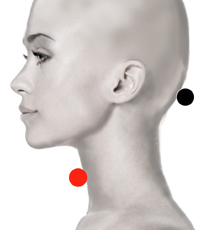

Meningitis - Meningococo
Pares
Bulbo raquídeo - tiroides
lumbar 1ó 2 - dorsal 5
dorso - lumbar *
dorsal 4 - lumbar 3

*Nota: Puede responder como: dorsal 4 - lumbar 1
Generalidades:
Causada por meningococo o viral. Produce muerte por insuficiencia ventilatoria. Paralisis de todo el cuerpo, Falsa Esclerosis Multiple con síntomas similares a la Esclerosis Múltiple verdadera. Lesiones en médula espinal inferior, produciendo flacidez, hipertrofia, debilidad, invalidez, dolor lumbar. En niños se puede presentar con convulsiones, fiebre, rigidez de nuca, vómito en proyectil. Simula fibromialgia.
Transmisión:
La meningitis viral se transmite entre personas a través de la saliva, por contacto directo o por pequeñas gotas que viajan a través del aire. No se trasmite por animales.